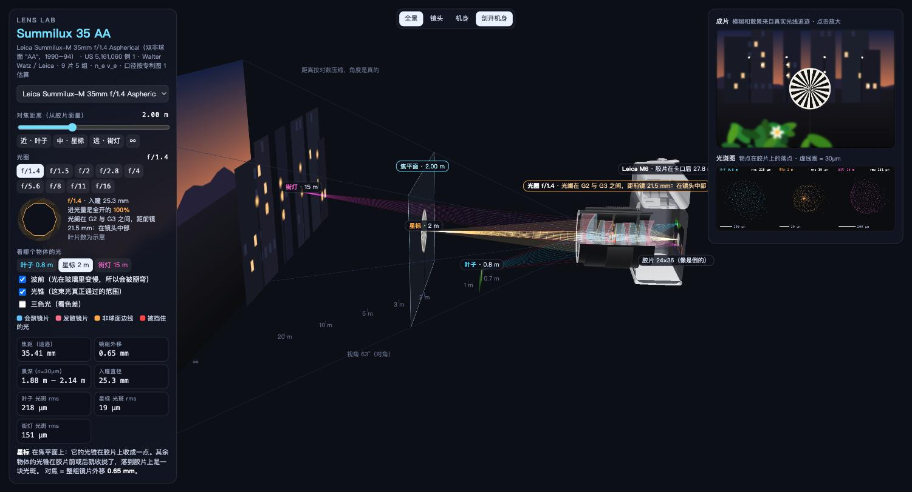
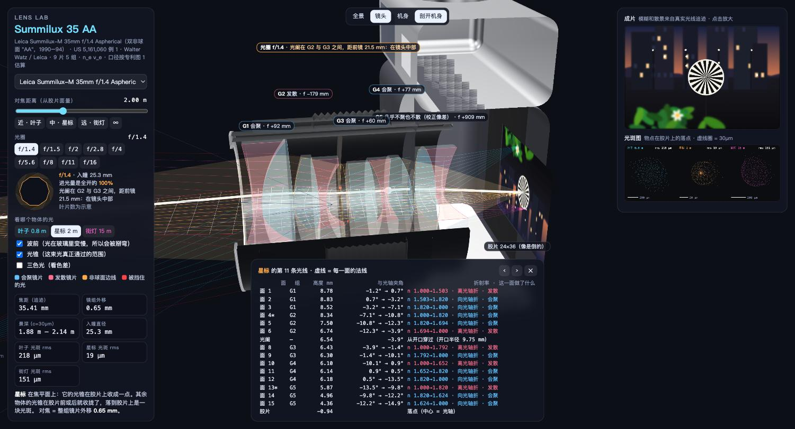
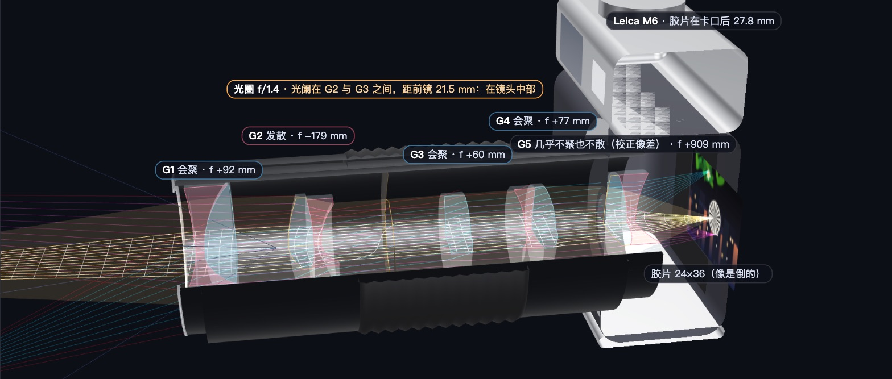

把一支 Summilux 35 AA 拆开，看光怎么走
Leica Summilux-M 35mm f/1.4 Aspherical，1990 年代只做了几千支的“双非球面 AA”。这里按它的专利处方，在浏览器里一条条追迹光线：转对焦环、收光圈、换镜头，看焦平面扫过场景，看每一片玻璃把光往哪里折。
打开光学台 →
起点
Ryan Sael 做过一个很漂亮的 The Plane of Focus。读了源码会发现，里面的镜片是道具：成像只用了一条薄透镜公式，光线是按公式画出来的。换一支镜头，结果不会变。
我想要的是下一层：每换一支镜头，用它真实的光学结构去算。
数据从哪来
厂商只公开焦距、光圈、片组数和结构图，没有曲率半径、间隔和玻璃折射率，没法追迹。完整处方写在专利的数值实施例里。
- PhotonsToPhotos Optical Bench Hub 把量产镜头对到专利：Summilux-M 35 Asph v1 对应 US 5,161,060 例 1（Walter Watz / Leica）。
- 专利给出 15 个面的半径、间隔、ne、νe，以及第 4、13 面的非球面系数。9 片 5 组。
- 对比用的第二支是 1934 年的 Zeiss Sonnar f/1.5，处方来自 nzhagen/LensLibrary。
怎么算
每条光线从物点出发，逐面求它和球面或非球面的交点，再用斯涅尔定律算折射方向；被镜片边缘或光圈叶片挡住就停下。对焦是整组镜片前移（M 口螺旋，没有浮动组），外移量按近轴像落回无穷远像位求解。
有一个坑：Leica 专利的非球面公式 p(s) = Σ K(n)(s²/2)ⁿ 里，s 是镜面点到顶点的弦长，不是离光轴的高度。按高度算，f/1.4 轴上光斑有 294 µm；改成弦长后是 12 µm，和专利写的“小于 20 µm”一致。
和专利对一下
| 项目 | 追迹 | 专利 / Zemax |
|---|---|---|
| 焦距 | 35.41 mm | 35 mm |
| 像高 12 mm 处畸变 | −0.98% | −0.871% |
| 像高 21 mm 处畸变 | −1.10% | −1.061% |
| 0.7 m 放大率 | 1:17.4 | 1:17.5 |
| f/1.4 轴上光斑 rms | 12 µm | < 20 µm |
| G1 到 G4 光焦度 | + − + + | + − + + |
| Sonnar 焦距 / 后焦 | 92.550 / 34.751 | 92.550 / 34.751 |
唯一对不上的是 G5：专利说它是负的，近轴算出来几乎没有光焦度（f ≈ +909 mm），页面上如实标成“校正像差”。
能看到什么

- 焦平面：只有落在焦平面上的物体，光锥才会在胶片上收成一点。
- 光圈：3D 叶片和正视小图；收光圈时，外圈光线变红，停在叶片上。光阑在 G2 与 G3 之间，镜头中部。
- 波前：按真实光程画的等相位线。光在玻璃里慢了约 1.8 倍，所以波前被掰弯，出镜后收向像点。
- 镜片着色：蓝色会聚，粉色发散，非球面描橙边。
- 成片与光斑图：模糊和散景都来自追迹出来的光斑，街灯的散景是逐盏盖印的真实光斑形状。
- Leica M6 机身：胶片在卡口后 27.8 mm，可以剖开看像倒着落在胶片上。

没做的
- 玻璃色散用阿贝数近似，没有用厂商的 Sellmeier 系数。
- 专利没给镜片口径，按专利附图比例估算，所以边角暗角和猫眼形状是近似的。
- 光圈叶片数是示意；没有模拟镜片间的鬼影和杂光。
源码在 toy/lens-lab，单个 HTML 文件，node test.mjs 会把追迹结果和专利数字逐项核对。